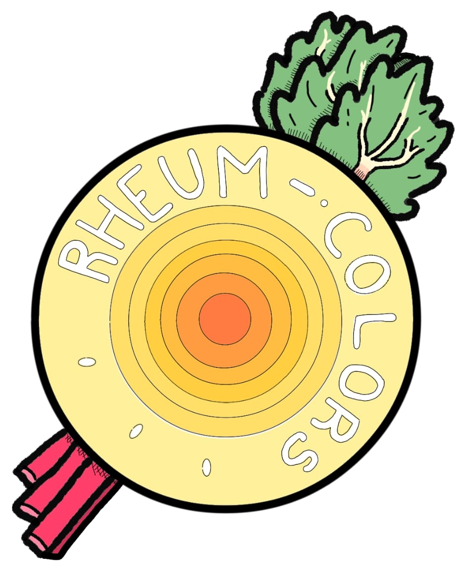

De acuerdo con Robert Estelrich la raíz del ruibarbo (la materia prima) contiene antraquinonas como emodina y rhein, las cuales aportan naturalmente tonalidades amarillas y anaranjadas. Sin embargo, un tinte no solo se compone de sus pigmentos, sino, que es necesario un mordiente (fijador de pigmentos), comúnmente se utilizan mordientes derivados de metales como lo es el alumbre, lamentablemente estos generan un impacto ambiental significativo, la ventaja de usar la raíz del ruibarbo es que esta ya contiene taninos el cual actúa como un mordiente natural con una alta efectividad.
El nombre “tanino” deriva del francés “tanin” (sustancia curtiente) y se utiliza para una gama de polifenoles naturales.
Entre los taninos más importantes que contiene el ruibarbo se encuentran:
Son metabolitos secundarios vegetales, tienen una funcionalidad p- quinoide en un núcleo antracénico.
Entre las antraquinonas presentes en el ruibarbo, destacan las siguientes:
Contáctanos:
392 110 2127